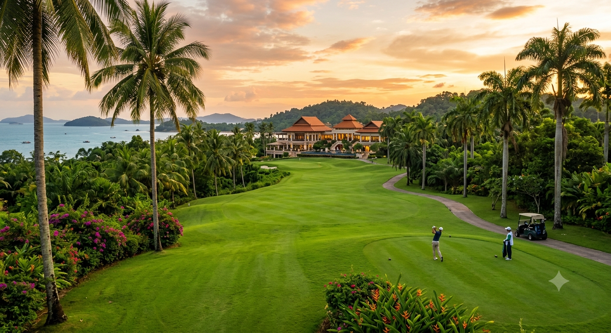

Six world-class courses across Batam and Bintan — from oceanfront fairways to exclusive country clubs, where palm trees line every tee and the late-afternoon range session transforms a Tuesday into a legend.
Six world-class courses span Batam and Bintan — from the oceanfront fairways of Palm Spring to the exclusive greens of Nongsa Country Club. Where palm trees line every tee, trade winds play through every valley.
Singapore golfers have long known that a short ferry ride unlocks extraordinary value: a round at a championship course in Batam or Bintan typically ranges from USD $50 to $85 — often on more interesting terrain with ocean views that Singapore's courses simply cannot replicate.
The Riau archipelago's golf portfolio features everything from championship par-72 layouts designed by international architects to innovative footgolf facilities where the whole group plays together. Palm Spring offers an all-inclusive resort golf experience (stay, play, dine on-site). Batam Hills challenges handicap players with dramatic elevation changes across its rolling hillside fairways. Tamarin splits your group between traditional golf and footgolf -- making it the ultimate friend-trip course.
Here is the Batam ritual that defines every golfer's visit: you play 18 holes ending around 3PM, hit the driving range for an hour as the sky transitions from white-hot to golden to deep blue, then walk into the clubhouse for cold drinks and Indonesian grilled seafood while discussing scorecards. That 4:30PM session at the drive tee with your golf crew -- that is when Batam's golf scene transforms from recreation to religion.
Every course described in detail with tee-time strategy, difficulty rating, and the experience that makes each one distinct.

This is the experience every Batam golfer remembers -- and returns for. Here is how it works:
The plan: Round up 4-6 friends after lunch or a morning swim at your resort. Each member grabs their club (or rents from the course's pro shop -- callus irons and wedges cost SGD $3/day). Drive to whichever course matches your group dynamic.
The timing: Tee off at 4:30PM. By the time you reach hole 6 or 7, the light has shifted from harsh white to warm gold -- every photo turns professional-level by instinct. Finish your round (or walk-off holes with friends) as the sky shifts from orange to deep purple through the evening.
The range session: This is where Batam's floodlit driving ranges become magic. Under bright stadium-style towers, you warm up your irons against each other: highest ball-speed challenge, closest-to-pin contest. The clubhouse serves cold Singha beer and ikan bakar until 11PM -- this is social golf at its absolute peak.
The best course for evening ranges: Palm Spring's range faces east toward Singapore across the dark strait with city lights twinkling on the far shore. Batam Hills' range sits 200 feet above sea level where you face three directions of ocean breeze -- testing every club in your bag.
This is the single most repeated Batam activity among Singaporean golfers who visit quarterly. It is not just about golf -- it is about the ritual, the company, and the sunset that arrives at exactly the right moment.
Six courses. One ferry ride. Sunset driving ranges under the stars. Property investments in the same neighborhoods where these courses are built.